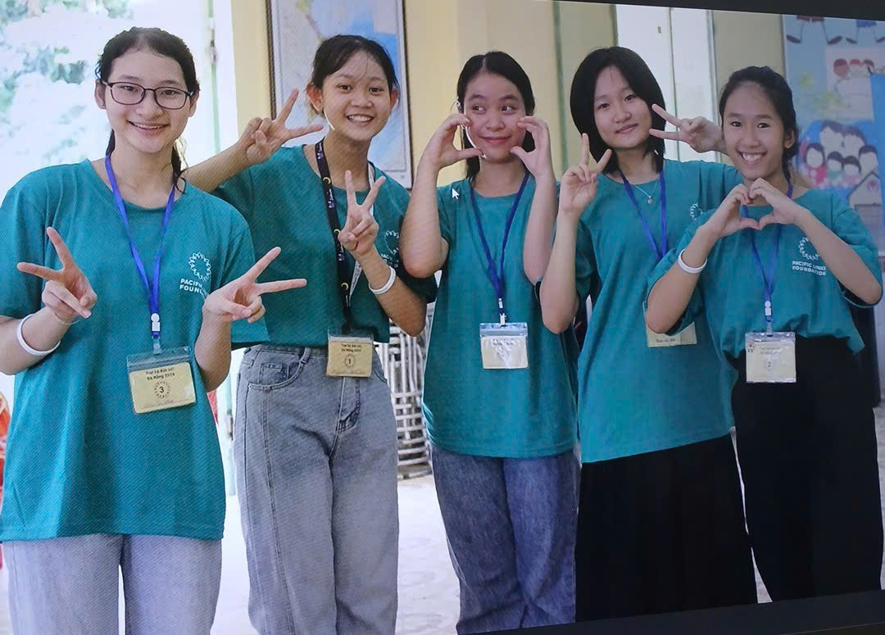
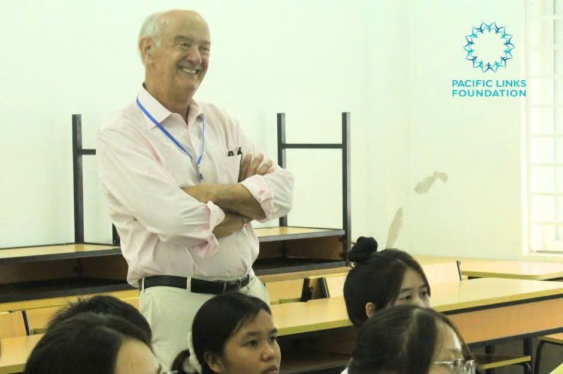
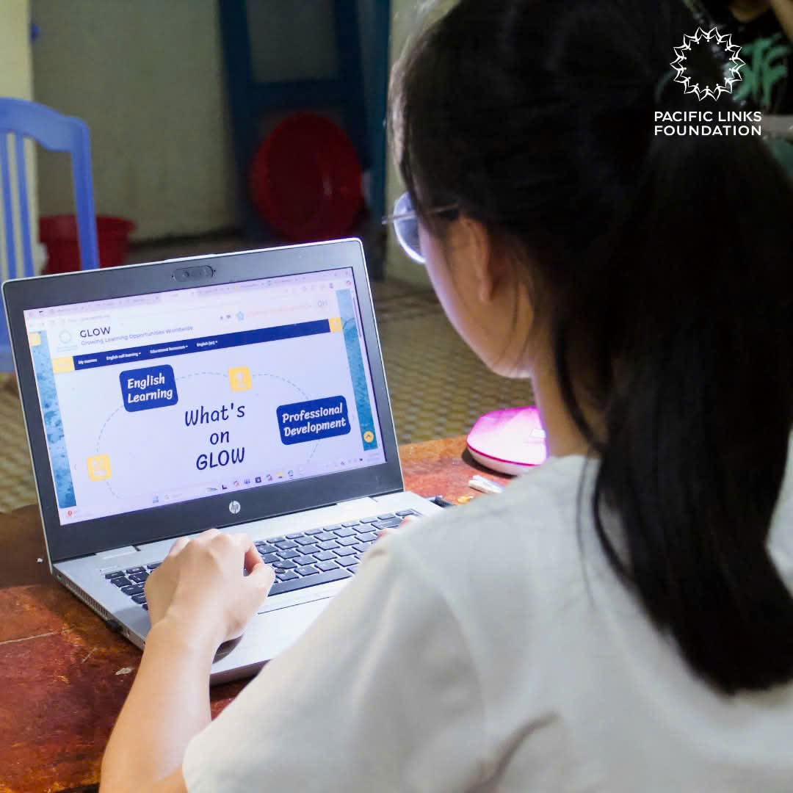

🌺 My Gratitude Message
I would like to express my deepest gratitude to the Pacific Links Foundation and all the
dedicated mentors, coordinators, and sponsors behind the SEEDS Scholarship.
You have opened a door of hope for me — a student who dares to dream, to grow, and to create a better future.
Thanks to SEEDS, I’ve been able to continue my studies with confidence and determination.
The guidance, workshops, and community activities have helped me improve not only my academic results but also
my leadership, empathy, and self-awareness.
I am especially thankful to the program coordinators and mentors who always encourage me to learn more,
believe in myself, and step out of my comfort zone.
Every message, every workshop, and every meeting reminds me how meaningful education can be when it comes with love and care.
I promise to use this opportunity wisely — to study hard, give back to my community, and one day become a person
who can also help others, just as SEEDS has helped me.
"Education is the most powerful tool to change the world —
and SEEDS has given me the chance to start that change within myself."
— Duong Thi Hong Van


